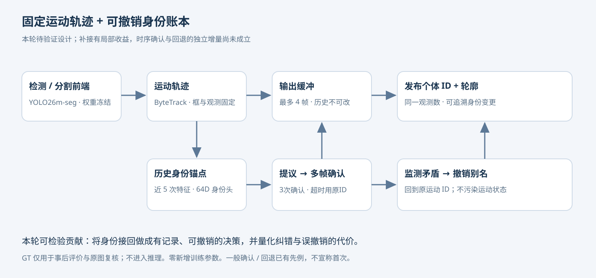

第三轮实验 · 28358lan 笔记本实测接回个体身份，
也要看清撤销的代价。
已完成19段视频、7组对照。身份补接存在实际收益；当前“确认 + 回退”方案还不能稳定超过基线，回退也会拆断正确连接。
+1.13新视频 M 相对 ByteTrack 的 IDF1
−1.46新视频 M 相对 BoT-SORT 的 IDF1
64 / 16间断事件初筛 / 逐帧深入复核
0 参数新增训练参数 · 最多4帧发布延迟
有效的部分，和仍未成立的主张
新确认集：ByteTrack 65.51 → 仅确认 C 68.63 → 完整 M 66.64；BoT-SORT 为68.10。M 相对 ByteTrack 的视频簇95%区间为 [−0.59, +2.54]，未通过稳定改善门槛。

C / I 是预先指定的机制对照。其收益不能记作新增回退模块的贡献，也不能在看到结果后替换本轮主方法。
四段可核查的实验回放
每幅画面都来自原始视频和已冻结输出，未手工修正 ID。颜色是预测身份，白框是官方标注参照。画面按原帧回放，并显示统一4帧缓冲后的发布时刻。
01 / 真实输出回放接回同一个体：身份补接的实际收益
仅确认与完整方案都接回原 ID；这一例不证明回退带来额外收益。
duck_2 · 原帧 25–65 · 慢放5fps · 案例为事后选择，完整结果见下表
02 / 真实输出回放及时止损：停止错用另一个体的旧 ID
G9 曾沿用 G10 的历史身份；回退停止错接，但不等于找回 G9 原 ID。
duck_2 · 原帧 72–106 · 慢放5fps · 案例为事后选择，完整结果见下表
03 / 真实输出回放代价：相似度下降，也可能还是同一个体
GT 仍为 G11；仅确认保留补接，完整方案撤销了这条正确连接。
zebra_5 · 原帧 78–124 · 慢放5fps · 案例为事后选择，完整结果见下表
04 / 真实输出回放树冠遮挡：先重新看见，才能判断是不是原个体
真实物理遮挡案例；完全不可见区间不确定，未计入完整遮挡恢复。
pig_4 · 原帧 55–106 · 慢放5fps · 案例为事后选择，完整结果见下表
为什么回退没有带来额外改善？
在可判定的已提交撤销中，9次仍属于同一GT个体，4次为不同GT，另7次无法判定。相似度变低并不充分说明身份接错。

计数是观测帧，不是独立事件数。归因依据固定检测与GT的事后匹配，未知身份独立保留；不构成独立人工金标准。
真实遮挡：已补证据，也保留缺口
64个候选事件已初筛；16个事件复核42页连续帧，并补看43张原分辨率裁剪。11个物理遮挡事件保留165条前后可见标签（沿用并复核官方框），其中132个后窗口标签参与补充比较。
严格完整遮挡的可靠事件为0；没有把GT漏标、部分可见和出画面当作完全遮挡。11例部分遮挡的“三帧前后同ID”严格成功均为0/11。ByteTrack / C / M 的后窗口仅41/132帧有可靠匹配，前端可观测性仍是瓶颈。
这一轮尚未完成可用于验证“完全遮挡后恢复”的标注集。当前新增标签是AI复核事件层，几何框来源为官方GT；不能冒充独立人工逐帧标注。
查看冻结标签与逐事件理由 · 标注冻结记录
被检验的模型设计

研究重点是让身份修改独立于运动轨迹，保留提议、确认、撤销的证据。一般确认和回退已有先例；本轮验证的复合机制尚未证明优于已有方法。
全序列结果，不只挑成功画面

* 此列包含提议期撤销与已提交撤销，不能直接作为成功纠错数。详细类型在事后审计中分列。工程组不作为泛化证明。